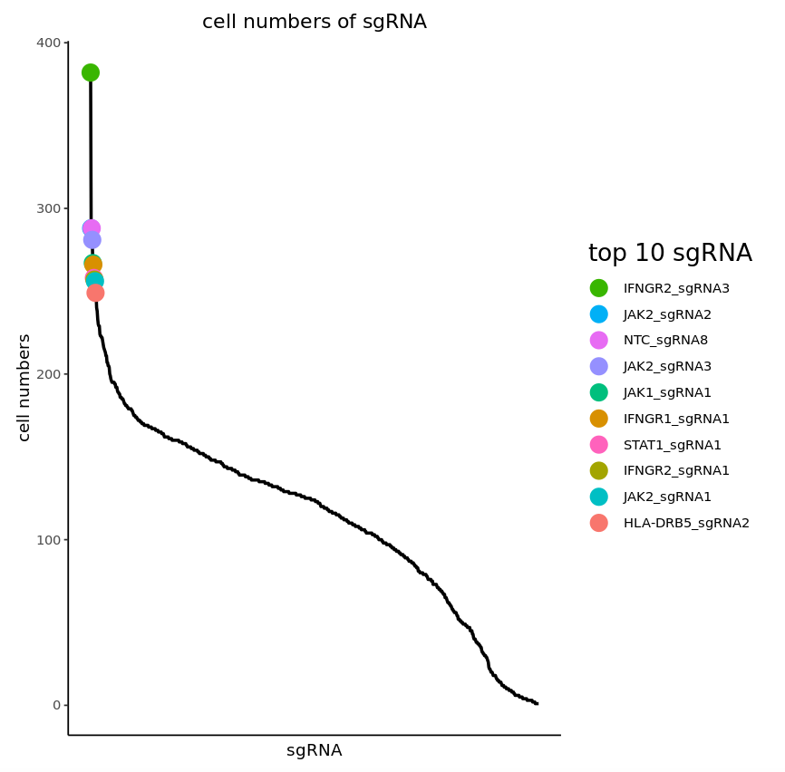
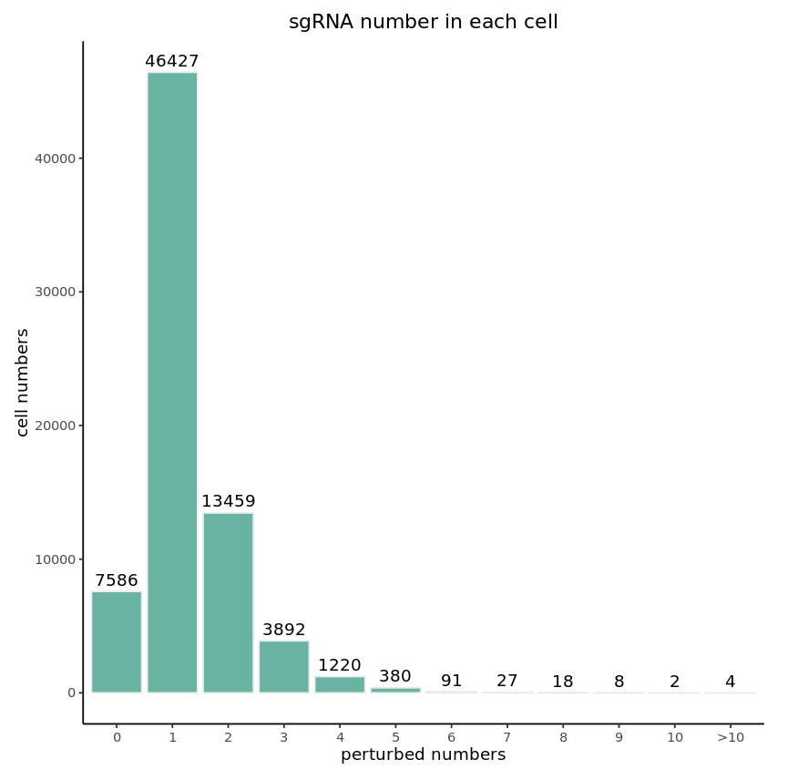
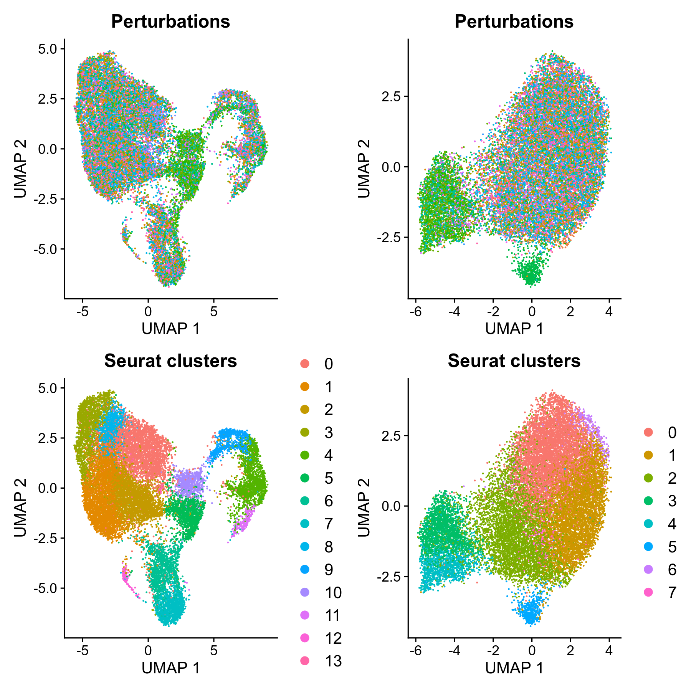
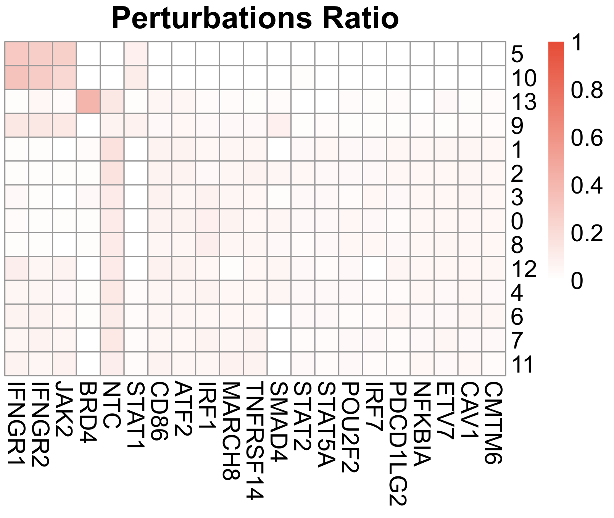
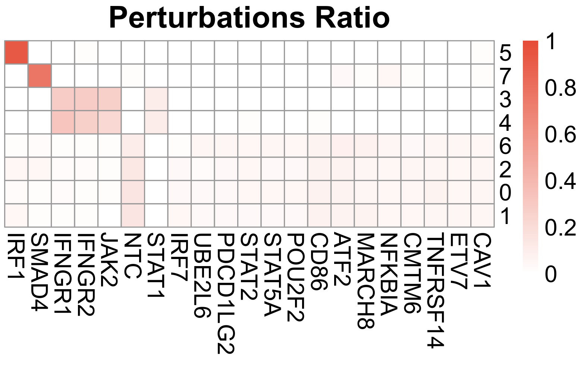

Last updated: 2021-09-23
Checks: 7 0
Knit directory: SCREEN/
This reproducible R Markdown analysis was created with workflowr (version 1.6.2). The Checks tab describes the reproducibility checks that were applied when the results were created. The Past versions tab lists the development history.
Great! Since the R Markdown file has been committed to the Git repository, you know the exact version of the code that produced these results.
Great job! The global environment was empty. Objects defined in the global environment can affect the analysis in your R Markdown file in unknown ways. For reproduciblity it’s best to always run the code in an empty environment.
The command set.seed(20210907) was run prior to running the code in the R Markdown file. Setting a seed ensures that any results that rely on randomness, e.g. subsampling or permutations, are reproducible.
Great job! Recording the operating system, R version, and package versions is critical for reproducibility.
Nice! There were no cached chunks for this analysis, so you can be confident that you successfully produced the results during this run.
Great job! Using relative paths to the files within your workflowr project makes it easier to run your code on other machines.
Great! You are using Git for version control. Tracking code development and connecting the code version to the results is critical for reproducibility.
The results in this page were generated with repository version dc5b2b2. See the Past versions tab to see a history of the changes made to the R Markdown and HTML files.
Note that you need to be careful to ensure that all relevant files for the analysis have been committed to Git prior to generating the results (you can use wflow_publish or wflow_git_commit). workflowr only checks the R Markdown file, but you know if there are other scripts or data files that it depends on. Below is the status of the Git repository when the results were generated:
Ignored files:
Ignored: .Rhistory
Untracked files:
Untracked: data/workflow.png
Untracked: img/
Untracked: output/workflow.png
Note that any generated files, e.g. HTML, png, CSS, etc., are not included in this status report because it is ok for generated content to have uncommitted changes.
These are the previous versions of the repository in which changes were made to the R Markdown (analysis/SCREEN.Rmd) and HTML (docs/SCREEN.html) files. If you’ve configured a remote Git repository (see ?wflow_git_remote), click on the hyperlinks in the table below to view the files as they were in that past version.
| File | Version | Author | Date | Message |
|---|---|---|---|---|
| html | 2c16336 | HailinWei98 | 2021-09-23 | Build site. |
| Rmd | a2a5b0a | HailinWei98 | 2021-09-23 | Publish the initial files for myproject |
| html | eeeebf3 | HailinWei98 | 2021-09-23 | Build site. |
| Rmd | 94450d1 | HailinWei98 | 2021-09-23 | Publish the initial files for myproject |
| html | 94450d1 | HailinWei98 | 2021-09-23 | Publish the initial files for myproject |
| html | 518a5ca | HailinWei98 | 2021-09-22 | Build site. |
| Rmd | ab04ccf | HailinWei98 | 2021-09-22 | Publish the initial files for myproject |
| html | 855bd74 | HailinWei98 | 2021-09-22 | Build site. |
| Rmd | e582e5c | HailinWei98 | 2021-09-22 | Publish the initial files for myproject |
scATAC-seq in this tutorial means gene perturbation combined with scATAC-seq.
Library needed packages
library(SCREEN)
library(Seurat)
library(stringi)
library(ggplot2)
library(plyr)
library(stringr)
library(hdf5r)
library(ggrepel)
library(clusterProfiler)
library(org.Hs.eg.db)
library(rtracklayer)
library(pheatmap)
library(psych)
Add meta data(perturbations, FRiP and replicate information) to the SeuratObject
replicate <- read.table("example/ATAC/replicate.txt", header = F)
peaks <- ATAC_Add_meta_data(sg_dir = "example/ATAC/sg_lib_all.txt", mtx_dir = "example/ATAC/peaks.rds", fragments = "example/ATAC/fragments.tsv.gz", replicate = replicate, cal.FRiP = TRUE)
Single-cell quality control
peaks_QC <- ATAC_scQC(mtx_dir = peaks, species = "Hs", prefix = "./", label = "", peak_frac = 0.01, nFeature = c(200, 500000), nCount = 1000, FRiP = 0.1, blank_NTC = FALSE)
Plot sgRNA information
sgRNA_quality_plot(sg_dir = "example/ATAC/sg_lib_all.txt", mtx_dir = peaks, prefix = "./", LABEL = "")
|  |  |
Different from scRNA-seq input, SCREEN can visualize fragments size from fragments file.
fragmentsSize(peaks, fragments = fragments, CBCindex = 4, startIndex = 2, endIndex = 3, maxSize = 1000, prefix = "./")To finish downstream analysis, SCREEN will convert the peak count matrix of scATAC-seq to gene activity matrix.
mtx <- CalculateGeneActivity(mtx_dir = peaks, fragments = "example/ATAC/fragments.tsv.gz", species = "Hs", version = "v75", gene_type = "Symbol", protein_coding = TRUE, pro_up = 3000, pro_down = 0)Mixscape is an optional function to calculate KO efficiency of each sgRNA, because it takes cells with only one sgRNA as input and has a requirement for input cell numbers.
mixscape <- IntegratedMixscape(sg_dir = "example/ATAC/sg_lib_all.txt", mtx_dir = mtx, NTC = "NTC", prefix = "./", label = "")As Mixscape calculate perturb signature for each cell labeled with perturbation, SCREEN compare the clustering results and perturbation ratio of each cluster to evaluate KO efficiency of each perturbation from another point of view.
|  |  |  |
improved_scmageck_lr is a function derived from scmageck_lr of scMAGeCK package. The input of improved_scmageck_lr is scaled matrix while the input of scmageck_lr is a normalized and scaled SeuratObject. The output of improved_scmageck_lr are transposed matrix of scmageck_lr output.
Normalize and scale count matrix after filtering
mtx_QC <- normalize_scale(mtx_dir = mtx)Get scale.data matrix
mtx_QC <- GetAssayData(object = mtx_QC, slot = "scale.data")
Running scMAGeCK_lr to evaluate regulatory score of each perturbation to each gene
results <- improved_scmageck_lr(BARCODE = "example/ATAC/sg_lib_all.txt", RDS = mtx_QC, NEGCTRL = "NTC", SELECT_GENE = NULL, LABEL = "improved", PERMUTATION = 10000, SAVEPATH = "./", LAMBDA = 0.01)
Plot DE gene number
DE_gene_plot(score_dir = results[[1]], pval_dir = results[[2]], project = "ATAC_example", prefix = "./", label = "", p_val_cut = 0.05, score_cut = 0.5, ylimit = "auto")
Visualize distribution of regulatory score and its p-value via volcano plot:
volcano(score_dir = results[[1]], pval_dir = results[[2]], prefix = "./", label = "", score_cut = 0.5)Calculate and visualize correlation between perturbations:
heatmap(score_dir = results[[1]], pval_dir = results[[2]], prefix = "./", label = "", score_cut = 0.5, p_val_cut = 0.05, num = 0)GO enrichment:
GOenrichment(score_dir = results[[1]], pval_dir = results[[2]], prefix = "./", score_cut = 0.5, p_val_cut = 0.05, DE_gene_to_use = "all", database = "org.Hs.eg.db", gene_type = "Symbol", showCategory = 10)For perturb-ATAC data, this function will find differential peaks between selected TF and negative control first.Potential enhancers are selected from differential peaks list, without overlap with potential promoter regions.The effect of the potential enhancers on genes close to it is equal to scores of the selected TF calculated by improved_scmageck_lr.
#Draw cicero plot for ATAC-seq input
ATACciceroPlot(object = peaks_QC, score_dir = RNA_results[[1]], pval_dir = RNA_results[[2]], selected = "MYC", species = "Hs", version = "v75", gene_annotations = NULL, pro_annotations = NULL, pro_up = 3000, pro_down = 0, overlap_cut = 0, p_val_cut = 0.05, score_cut = 0, p_adj_cut = 0.05, logFC_cut = 1, NTC = "NTC", min.pct = 0.2, upstream = 2000000, downstream = 2000000, test.use = "wilcox", track_size = c(1,.3,.2,.3), include_axis_track = TRUE)
sessionInfo()R version 4.0.2 (2020-06-22)
Platform: x86_64-apple-darwin17.0 (64-bit)
Running under: macOS Catalina 10.15.7
Matrix products: default
BLAS: /Library/Frameworks/R.framework/Versions/4.0/Resources/lib/libRblas.dylib
LAPACK: /Library/Frameworks/R.framework/Versions/4.0/Resources/lib/libRlapack.dylib
locale:
[1] en_US.UTF-8/en_US.UTF-8/en_US.UTF-8/C/en_US.UTF-8/en_US.UTF-8
attached base packages:
[1] stats graphics grDevices utils datasets methods base
other attached packages:
[1] workflowr_1.6.2
loaded via a namespace (and not attached):
[1] Rcpp_1.0.7 whisker_0.4 knitr_1.33 magrittr_2.0.1
[5] R6_2.5.0 rlang_0.4.11 fansi_0.5.0 stringr_1.4.0
[9] tools_4.0.2 xfun_0.25 utf8_1.2.2 git2r_0.28.0
[13] jquerylib_0.1.4 htmltools_0.5.1.1 ellipsis_0.3.2 rprojroot_2.0.2
[17] yaml_2.2.1 digest_0.6.27 tibble_3.1.3 lifecycle_1.0.0
[21] crayon_1.4.1 later_1.2.0 sass_0.4.0 vctrs_0.3.8
[25] promises_1.2.0.1 fs_1.5.0 glue_1.4.2 evaluate_0.14
[29] rmarkdown_2.10 stringi_1.7.3 bslib_0.2.5.1 compiler_4.0.2
[33] pillar_1.6.2 jsonlite_1.7.2 httpuv_1.6.1 pkgconfig_2.0.3